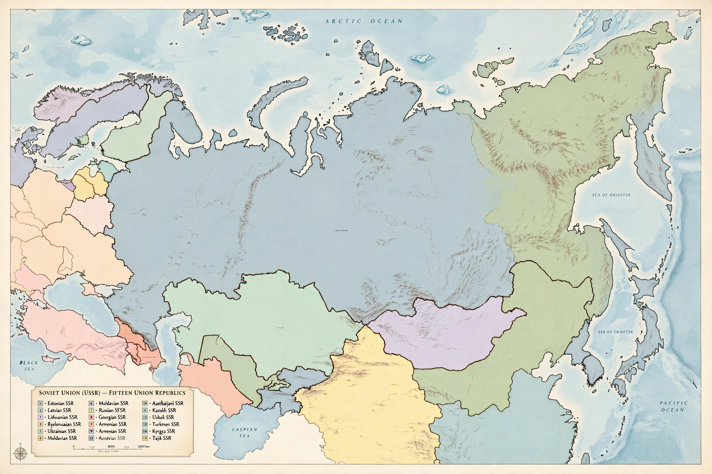

Soviet Union

[Image: Political map of the Soviet Union showing its fifteen union republics]
The Soviet Union, officially the Union of Soviet Socialist Republics (USSR), was a transcontinental country spanning Eastern Europe and Northern Asia that existed from 1922 until its dissolution in 1991. A one-party state governed by the Communist Party, it was the world's largest country by area and, with the United States, one of two superpowers of the Cold War.
History
The USSR was formed after the Russian Revolution of 1917 and civil war, uniting Russia with other soviet republics; it eventually comprised 15 union republics, with Moscow as capital. Under Joseph Stalin it industrialised rapidly at enormous human cost, including collectivisation famines and political terror. The Soviet Union bore the largest share of fighting on the Eastern Front in the Second World War, suffering on the order of 27 million deaths.
Cold War and dissolution
After 1945 the USSR led the Warsaw Pact bloc against NATO, competed in the nuclear arms race and the space race — launching the first satellite, Sputnik 1 (1957), and the first human in space, Yuri Gagarin (1961). Mikhail Gorbachev's reforms (glasnost and perestroika) in the late 1980s preceded the failed August 1991 coup; the union was formally dissolved in December 1991, succeeded principally by the Russian Federation.